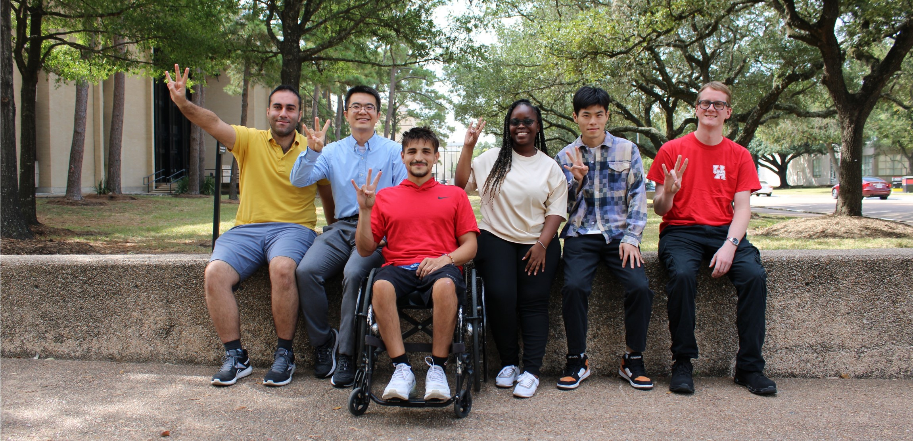
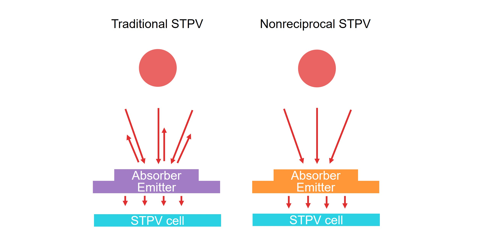
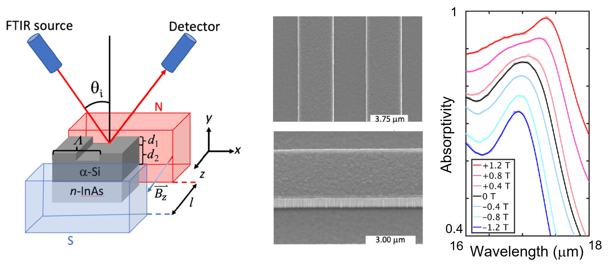
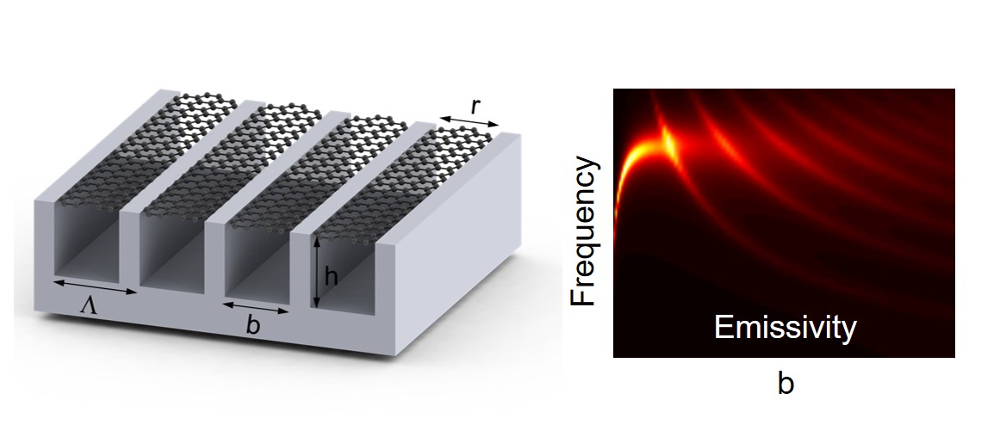
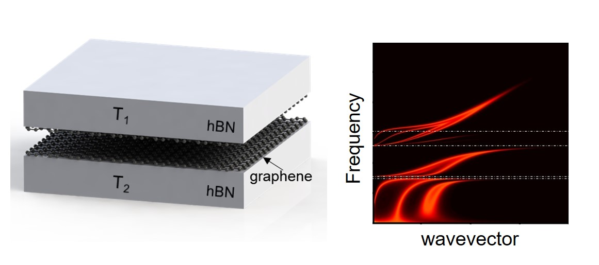
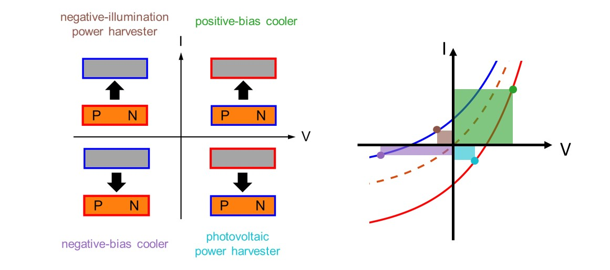
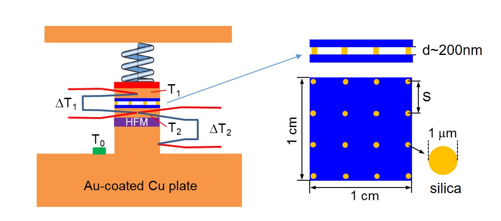
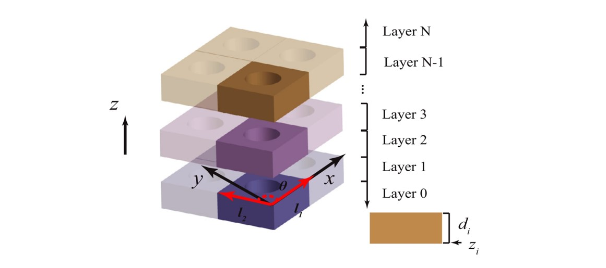
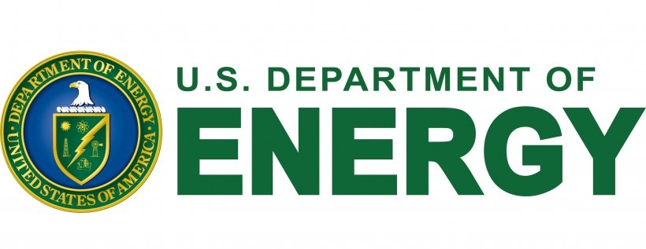

We are hiring — join the TPX Lab!
In the Thermal PhotoniX (TPX) Lab, we are engaged in theoretical and experimental understanding of photonic transport processes for thermal management, energy conversion, and information processing. We are motivated by the grand challenges and opportunities in global warming, renewable energy, and the digital revolution.
We highlight some of our recent research below, including near- and far-field thermal radiation, nanophotonics, electronic circuits, energy harvesting, plasmonics, 2D materials, and numerical design.
Featured Research
Selected recent works from the TPX Lab.

Strong Optical Nonreciprocity from Magnetically Doped Dirac Semimetals

Mode Conversion of Hyperbolic Phonon Polaritons in van der Waals Terraces

Perfect Heat Rectification and Circulation with Nonreciprocal Radiative Surfaces

High-Temperature Strong Nonreciprocal Thermal Radiation from Semiconductors

Direct Observation of the Violation of Kirchhoff’s Law of Thermal Radiation

Nonreciprocal Solar Thermophotovoltaics Approaching the Landsberg Limit
Research Gallery
A broader look at our research over the years.

Zhao Group @ Oct. 2022

Nonreciprocal Solar Thermophotovoltaics

Nonreciprocal infrared absorption via resonant magneto-optical coupling to InAs

Axion-Field-Enabled Nonreciprocal Thermal Radiation in Weyl Semimetals

Self-Sustaining Thermophotonic Circuits

Strong Plasmonic Coupling Between Graphene Ribbon Array and Metal Gratings

Integrated Near-Field Thermo-Photovoltaics for On-Demand Heat Recycling

Sub-Wavelength Passive Optical Isolators Using Photonic Structures Based on Weyl Semimetals

Enhanced Photon Tunneling by Surface Plasmon-Phonon Polaritons in Graphene/hBN Heterostructures

Experimental Demonstration of Energy Harvesting from The Sky Using The Negative Illumination Effect of a Semiconductor Photodiode

Chemical Potential of Photons and Its Implications For Controlling Radiative Heat Transfer

Near-field Radiative Heat Transfer Between Doped-Si Parallel Plates Separated by a Spacing down to 200 nm

MESH: A Free Electromagnetic Solver for Far-Field and Near-Field Radiative Heat Transfer for Layered Periodic Structures
Group News
| 07/05/2026: | Bardia's work "Observing Strong Optical Nonreciprocity from Magnetically Doped Dirac Semimetals" is accepted by Nature Communications. Congratulations to Bardia and the TPX lab! |
| 05/18/2026: | Dr. Zhao receives the ASME Rising Star of Mechanical Engineering Award! Congratulations to the entire TPX lab! |
| 04/30/2026: | Congratulations to Bardia for winning the Graduate Student Silver Award at the 2026 MRS Spring Meeting! |
| 02/23/2026: | Congratulations to Bardia for being selected as a Graduate Student Award Finalist for the 2026 MRS Spring Meeting! |
| 01/31/2026: | Sina's work "Mode conversion of hyperbolic phonon polaritons in van der Waals terraces" is published on Nature Communications. Congratulations! [Link]. |
| 01/30/2026: | Welcome America Duarte to the TPX lab! |
| 01/29/2026: | Our invention on heat rectification based on nonreciprocal photonic thermal devices is reported by UH and new press all over the world. Congrats to Sina and the TPX lab! See report by UH, ecoinventos, newsbreak, MSN, houstondaily, techxplore, digitaltrends, and many others. |
| 12/05/2025: | Congratulations to Bardia for a new manuscript submission. A great effort! |
| 12/05/2025: | Sina successfully defends his PHD dissertation "Breaking Reciprocity of Photon Transport for Thermal and Energy Applications". Congratulations! |
| 10/20/2025: | Dr. Zhao visits the Department of Mechanical Engineering of Vanderbilt University and presents the TPX lab's reserch on nonreciprocal thermal radiation. Thanks to Prof. Joshua D. Caldwell for the kind invitation. |
| 10/14/2025: | Sina's work "Perfect heat rectification and circulation with nonreciprocal radiative surfaces in the far field" is accepted in Physical Review Research. Congratulations to Sina! A great effort! |
| 09/27/2025: | Congratulations to Bardia for a new manuscript submission. A great effort! |
| 08/28/2025: | Welcome Dr. Renkun Chen from University of California, San Diego to visit the TPX lab ! |
| 08/12/2025: | Congratulations to Sina — our patent on nonreciprocal solar thermophotovoltaics has been issued as US Patent 12,388,390 (2025) [Link]. |
| 08/03/2025: | Welcome Sudipta to the TPX Lab! |
| 06/15/2025: | Dr. Zhao attends The 11th International Symposium on Radiative Transfer (RAD-25), Kuşadasi, Türkiye, June 15-20 and presents a poster. |
| 06/04/2025: | Dr. Zhao receives the prestigious NSF CAREER award [Link]. Congratulations to everyone in the TPX lab! |
| 05/12/2025: | Dr. Zhao attends Boron Nitride Workshop (BNW2025), Nashville, TN, May 12-16 and gives a talk on "Controlling Near- and Far-Field Thermal Radiation with hBN Nanophotonics". |
| 04/7/2025: | Zhao Group attend the Materials Research Society (MRS) 2025 Spring Meeting, Seattle, WA, Apr. 7 - 11. Bardia presents a poster on “High-Temperature Nonreciprocal Thermal Radiative Properties of Semiconductors”. |
| 04/30/2025: | Bardia and Sina's work on high-temperature nonreciprocal thermal emission is published on ACS Photonics! Congrats! |
| 03/26/2025: | Welcome Dr. Zhuomin Zhang from Georgia Tech to visit us! |
| 03/17/2025: | Dr. Zhao attends 2025 ARPAE Energy Innovation Summit at Washington, DC. |
| 03/01/2025: | Welcome Yasmine to the TPX lab! |
| 02/27/2025: | Dr. Zhao and Sina start to work on a new patent application. |
| 02/12/2025: | Dr. Zhao gives an seminar online for the Department of Electrical Engineering at the University of Utah. Thanks to Dr. Weilu Gao for the invitation! |
| 01/13/2025: | Welcome Kianoosh to the TPX lab! |
| 10/03/2024: | Dr. Zhao, in collaboration with Dr. Ben Xu and others, is awarded by DOE for solar energy reserach. |
| 09/19/2024: | Dr. Joshua Caldwell from the Vanderbilt University visits our group. |
| 09/17/2024: | Dr. Mikhail Kats from the University of Wisconsin-Madison visits our group. |
| 09/10/2024: | Dr. Zhao visits the Physics Department of University of North Texas. Thanks to the invitation of Dr. Yuzhe Xiao! |
| 08/15/2024: | Welcome Bardia to the TPX lab! We look forward to working with you Bardia! |
| 07/15/2024: | Dr. Zhao gives an invited presentation on polaritons for thermal photonics in the 5th International Workshop on Nano-Micro Thermal Radiation (NanoRad 2024), Sapporo, Hokkaido, Japan. |
| 07/15/2024: | Sina presents his research on controlling the bandwidth and contrast of nonrecprocal thermal emission in Summer Heat Transfer Conference, Anaheim, CA, USA. |
| 06/15/2024: | Dr. Zhao receives funding from the SEED Program from UH to support the development of nonreciprocal photonic devices. |
| 05/10/2024: | Our work on broadband nonreciprocal thermal emission is accepted by Light: Science & Applications. Thanks to all the collaborators. |
| 04/09/2024: | Dr. Zhao gives a talk in the Department of Physics at UH. |
| 04/05/2024: | Welcome John to the TPX lab! |
| 02/22/2024: | Dr. Timothy Fisher from University of California, Los Angeles visits our group. |
| 02/21/2024: | Sina's work is selected as Editor's Pick and is featured by APL. Congratulations! |
| 02/12/2024: | Sina's work is accepted by APL. Congratulations! |
| 02/07/2024: | Welcome Ani to the TPX lab! |
| 01/25/2024: | Dr. Zhao and Sina receive an NSF I-CORPS award to support the commercialization of nonreciprocal solar harvesting technology [Link]. |
| 07/24/2023: | Our paper on direct observation of the violation of Kirchhoff's law of thermal radiation is published in Nature Photonics [Link]. Thanks to our collaborators! |
| 07/19/2023: | Welcome Sahag Bozoyan to the TPX lab! |
| 07/10/2023: | Sina and Dr. Zhao attend the Summer Heat Transfer Conference, SHTC 2023, in Washington DC, USA. Both of them give presentations. |
| 06/21/2023: | Dr. Zhao visits McGill University at Montreal, Quebec, Canada, and gives a talk on nonreciprocal thermal radiation. Thanks to Prof. Kai Wang for the host! |
| 06/15/2023: | Dr. Zhao receives the 2023 Elsevier/JQSRT Raymond Viskanta Young Scientist Award, one of the highest honors for faculty early in their careers in the field of radiative transfer [Link]. |
| 06/12/2023: | Dr. Zhao receives an NSF award to study nonreciprocal thermal radiation [Link]. |
Archived News
| 06/12/2023: | Dr. Zhao attends the 10th International Symposium on Radiative Transfer, RAD-23, in Thessaloniki, Greece. |
| 05/31/2023: | Sina attends the 14th World Conference on Thermophotovoltaic Generation, and discusses his work on nonreciprocal solar thermophotovoltaics. |
| 05/21/2023: | Changkang attends the International Conference on Surface Plasmon Photonics (SPP10) at Houston, TX, and finishes his first conference presentation! |
| 12/31/2022: | Happy new year! |
| 11/30/2022: | Dr. Zhao is selected as a 50-in-5 scholar of UH. Congratulations! |
| 11/24/2022: | Nick and Alex receive the 2023 Provost's Undergraduate Research Scholarship. Congratulations! |
| 11/04/2022: | Prof. Zhao gives an invited talk in the Department of Mechanical and Aerospace Engineering at the Ohio State University. Thanks to Prof. Shang Zhai for hosting! |
| 10/31/2022: | Prof. Zhao and Changkang attend IMECE International Mechanical Engineering Congress & Exposition at Columbus, OH. |
| 10/12/2022: | Prof. Zhao visits Prof. Andrea D. Pickel's group at the University of Rochester. |
| 10/07/2022: | Our work on nonreciprocal solar thermophotovoltaics has been reported by worldwide news media, including Interesting Engineering, PVbuzz Media, eeDesignIt, AZO CleanTech, Mirage News, Innovation News Network, Bioengineer.org, Science Daily, Techi AI, BusinessNews, Houston News, The Science Times, Innovation News Network, List Solar, TechiAzi, Smartech Energy, New Jersy Updates, TechNewsBoy, Engineers Forum, My Crush, Technology Networks, The Brighter Side, Atlantis Rising, Mercom India, Lab Roots, Innovation Toronto, Brightly News, India Education Diary, Innovation Map, Nasdaq, Aljazeera.net, Oilprice.com, BusinessNews, HydrogenFuelNews, List Solar, PV Magazine, Optics.org, and more. |
| 10/03/2022: | Our work on nonreciprocal solar thermophotovoltaics is featured on UH news. Congratulations to Sina! |
| 09/30/2022: | Prof. Zhao gives an invited talk in the Department of Chemistry of UH. Thanks to Prof. Naihao Chiang for the invitation! |
| 09/29/2022: | Sina's paper is selected by the Photovoltaic Energy Conversion collection of Physical Review Applied. Congratulations! |
| 09/29/2022: | Prof. Ying Sun from University of Cincinnati visits us. Welcome! |
| 09/28/2022: | Dr. Zhao gives an invited talk at the 13th Asian Thermophysical Properties Conference (ATPC 2022). Thanks to Dr. Atsushi Sakurai for the kind invitation. |
| 09/28/2022: | Welcome Leena to the TPX lab! |
| 09/28/2022: | Welcome Alex to the TPX lab! |
| 09/27/2022: | Welcome Jennifer to the TPX lab! |
| 08/26/2022: | FTIR and UVVIS are installed and tested. |
| 08/23/2022: | Sina's first paper is accepted for publication in Physics Review Applied. Congratulations! The first paper of the TPX lab! |
| 08/09/2022: | Welcome Changkang to the TPX lab! |
| 06/23/2022: | TPX lab has new UV-VIS! |
| 05/06/2022: | First experiment to show strong nonreciprocal thermal radiation published in Science Advances. Thanks to Harry Atwater's group at Caltech and Shanhui Fan's group at Stanford. |
| 04/12/2022: | TPX lab's first patent application filed. Congrats to Sina! |
| 04/12/2022: | Sina's first manuscript submitted. Congrats! |
| 04/05/2022: | Dr. Zhao gives an invited talk at SPIE Defense & Commercial Sensing on near-field thermophotonic systems. |
| 03/24/2022: | Prof. Gururaj Naik visits us from the Rice University. Welcome! |
| 02/15/2022: | TPX lab has new optical tables and FTIR! |
| 01/30/2022: | Dr. Zhao attends the seminar on Reflecting on Professor Gang Chen's Case and Looking Ahead to the Future of the China Initiative. |
| 12/02/2021: | Benjamin and Manal receive the 2022 Provost's Undergraduate Research Scholarship. Congratulations! |
| 11/30/2021: | Dr. Zhao gives an invited talk at 2021 MRS Fall Meeting & Exhibit. |
| 11/11/2021: | Welcome Prof. Pramod Reddy to the TPX lab! |
| 11/10/2021: | Welcome Soumyasis to the group! |
| 11/06/2021: | Paper on nonreciprocal metasurface is accepted in Physical Review Applied. |
| 11/05/2021: | Welcome Benjamin to the group! |
| 11/05/2021: | Welcome Manal to the group! |
| 10/26/2021: | Dr. Zhao gives an invited talk at the Rice University Department of Electrical and Computer Engineering. Thanks to Prof. Gururaj Naik for the host and invitation! |
| 09/17/2021: | Welcome Jay to the group! |
| 09/01/2021: | Welcome Sina to the group! |
| 09/01/2021: | First day of the Thermal PhotoniX (TPX) Lab! |
| 04/22/2021: | Dr. Zhao will join the Department of Mechanical Engineering at the U of Houston in Fall 2021. |


